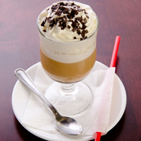
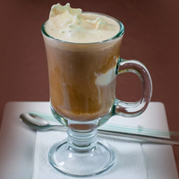

725-60-60") +7(353)725-60-60
+7(353)725-60-60
Кофе Глясе
Глясе́ (от фр. glacé «ледяной, замороженный») — холодный напиток на основе кофе с добавлением мороженого. В качестве посуды обычно используется стеклянный стакан или фужер.
Родиной десерта считается Франция, но некоторые факты оспаривают это утверждение: есть версия, что глясе впервые приготовили в Австрии, но напиток не обрёл там популярности. Когда впервые приготовлен такой напиток неизвестно и какой его первоначальный рецепт, также никто не знает. Например, есть мнения, что изначально глясе — это кофе с ликёром и кубиком льда, и что глясе — это кофе с яичным желтком.
 Существует легенда о появлении этого напитка. Молодой австрийский парень забежал в кафе, опаздывая на встречу. Там он заказал капучино, но у бармена, делающего напитки, не оказалось молока. Недолго думая, он заменил его мороженым. Клиенту так понравился холодный кофе, что с этого дня он стал заказывать только его. После чего бармен ввёл холодный кофейный напиток и эту технологию приготовления в меню.
Сначала кофе варится в турке или кофемашине, после чего напиток требует охлаждения примерно до +10 °С. Затем кофе наливается в стеклянный стакан объёмом около 300 миллилитров и в него добавляется мороженое (составляет от общей массы примерно 25 %). В качестве дополнительных наполнителей также могут использоваться тёртый шоколад, леденцовая крошка, кокосовая стружка, молотая корица, орехи или порошок какао